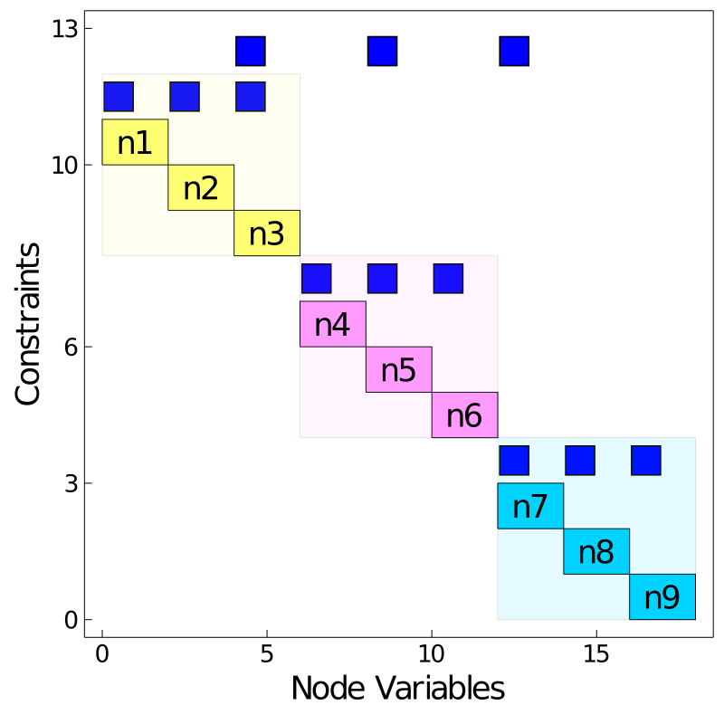
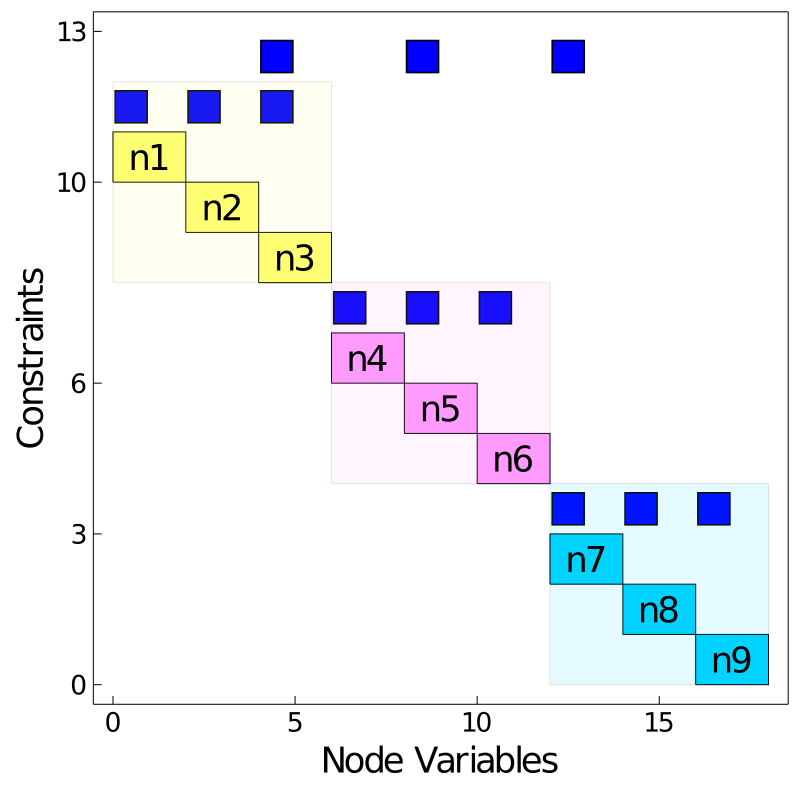

Modeling
In Plasmo.jl, the primary modeling object is called an OptiGraph. The OptiGraph adheres to a graph-based style of modeling that uses nodes and edges to create optimization problems. This graph-based style permits modular model development and makes it possible to capture and represent complex optimization problem structures. An OptiGraph is composed of OptiNodes which represent individual optimization problems that are connected by OptiEdges which encapsulate LinkConstraints (i.e. linking constraints that couple optinodes). A key idea behind Plasmo's' graph-based approach is that it works at a high level of abstraction and uses modular principles and hierarchical modeling to express complex optimization problems. The optimization models created with an optigraph can be used to reveal inherent structures that lend themselves to graph processing tasks such as partitioning.
The OptiGraph ultimately describes the following mathematical representation of an optimization problem:
In this formulation, $\mathcal{G}$ represents the optigraph, ${\{x_n}\}_{n \in \mathcal{N}(\mathcal{G})}$ describes a collection of decision variables over the set of nodes (optinodes) $\mathcal{N}(\mathcal{G})$, and $x_n$ is the set of decision variables on node $n$. The objective function for the optigraph $\mathcal{G}$ is given by a linear combination of objective functions on each optinode $f_n(x_n)$. The second equation represents constraints on each optinode $\mathcal{N}(\mathcal{G})$, and the third equation represents the collection of linking constraints associated with optiedges $\mathcal{E}(\mathcal{G})$. The constraints of an optinode $n$ are represented by the set $\mathcal{X}_n$ while the linking constraints that correspond to an edge $e$ are represented by the vector function $g_e(\{x_n\}_{n \in \mathcal{N}(e)})$.
From an implementation standpoint, an OptiGraph contains OptiNode and OptiEdge objects and extends much of the modeling functionality and syntax from JuMP. The OptiNode object encapsulates a Model object from JuMP, and the OptiEdge object encapsulates the linking constraints that define coupling between optinodes.
Creating an OptiGraph
An OptiGraph does not require any arguments to construct:
julia> graph1 = OptiGraph()
OptiGraph:
local nodes: 0, total nodes: 0
local link constraints: 0, total link constraints 0
local subgraphs: 0, total subgraphs 0An optigraph optimizer can also be specified using JuMP.set_optimizer where an optimizer can be any JuMP compatible solver or a custom developed Plasmo.jl solver (see the Solvers section). For example, we could construct an optigraph that uses the Ipopt.Optimizer from the Ipopt package like following:
julia> using Ipopt
julia> set_optimizer(graph1,Ipopt.Optimizer)Adding OptiNodes
The most effective way to add optinodes to an optigraph is by using the @optinode macro. The below piece of code adds the node n1 to the optigraph graph1.
julia> @optinode(graph1,n1)
OptiNode w/ 0 Variable(s)It is also possible to create sets of optinodes with a single call to @optinode like shown in the below code snippet. Here, we create two more optinodes which returns the reference nodes. This input produces a JuMP.DenseAxisArray which allows us to refer to each optinode using the produced index sets. For example, nodes[2] and nodes[3] each return the corresponding optinode.
julia> @optinode(graph1,nodes[2:3])
1-dimensional DenseAxisArray{OptiNode,1,...} with index sets:
Dimension 1, 2:3
And data, a 2-element Array{OptiNode,1}:
OptiNode w/ 0 Variable(s)
OptiNode w/ 0 Variable(s)
julia> nodes[2]
OptiNode w/ 0 Variable(s)
julia> nodes[3]
OptiNode w/ 0 Variable(s)Each optinode can have its underlying model constructed in a modular way. Here we loop through each optinode in graph1 using getnodes and construct its underlying model by adding variables, a constraint, and objective function.
julia> for node in getnodes(graph1)
@variable(node,x >= 0)
@variable(node, y >= 2)
@constraint(node,x + y >= 3)
@objective(node, Min, y)
endThe OptiNode extends JuMP.AbstractModel and supports most of the same JuMP macros. However, extending nonlinear functionality in JuMP is not yet supported, and so one must use @NLnodeconstraint as opposed @NLconstraint to create nonlinear constraints on an optinode.
Variables within an optinode can be accessed directly by indexing the associated symbol. This enclosed variable space is useful for referencing variables on different optinodes when creating linking constraints or optigraph objective functions.
julia> n1[:x]
x
julia> nodes[2][:y]
yAdding Linking Constraints (OptiEdges)
Linking constraints (LinkConstraints) are linear constraints that couple variables across different optinodes. The simplest way to create a linking constraint is to use the @linkconstraint macro. This macro accepts the same input as the JuMP @constraint macro and creates linear constraints over multiple nodes within the same optigraph.
julia> @linkconstraint(graph1, n1[:x] + nodes[2][:x] + nodes[3][:x] == 3)
LinkConstraintRef(1, OptiEdge w/ 1 Constraint(s))We can also plot the graph structure of graph1 (see Plotting) using both a graph and matrix layouts.
julia> using Plots;
julia> plt_graph = Plots.plot(graph1,node_labels = true, markersize = 30,labelsize = 15, linewidth = 4,layout_options = Dict(:tol => 0.01,:iterations => 2),plt_options = Dict(:legend => false,:framestyle => :box,:grid => false,:size => (400,400),:axis => nothing));
julia> Plots.savefig(plt_graph,"graph1_layout.svg");
julia> plt_matrix = Plots.spy(graph1,node_labels = true,markersize = 15);
julia> Plots.savefig(plt_matrix,"matrix1_layout.svg");Hierarchical Modeling
A fundamental feature of using optigraphs is that it is possible to create subgraphs (i.e. sub-optigraphs) within an optigraph. This enables a hierarchical style of modeling that retains its modular aspects. Subgraphs are defined using the add_subgraph! function which embeds an optigraph as a subgraph within a higher level optigraph. This is demonstrated in the below snippets.
First, we create two new optigraphs in the same fashion we did above.
julia> graph2 = OptiGraph();
julia> @optinode(graph2,nodes2[1:3]);
julia> for node in getnodes(graph2)
@variable(node, x >= 0)
@variable(node, y >= 2)
@constraint(node,x + y >= 5)
@objective(node, Min, y)
end
julia> @linkconstraint(graph2, nodes2[1][:x] + nodes2[2][:x] + nodes2[3][:x] == 5);
julia> graph3 = OptiGraph();
julia> @optinode(graph3,nodes3[1:3]);
julia> for node in getnodes(graph3)
@variable(node, x >= 0)
@variable(node, y >= 2)
@constraint(node,x + y >= 5)
@objective(node, Min, y)
end
julia> @linkconstraint(graph3, nodes3[1][:x] + nodes3[2][:x] + nodes3[3][:x] == 7);Now we have three optigraphs (graph1,graph2, and graph3), each with their own local optinodes and linking constraints (which induce optiedges). These optigraphs can be embedded into a higher level optigraph with the following snippet:
julia> graph0 = OptiGraph()
OptiGraph:
local nodes: 0, total nodes: 0
local link constraints: 0, total link constraints 0
local subgraphs: 0, total subgraphs 0
julia> add_subgraph!(graph0,graph1)
OptiGraph:
local nodes: 0, total nodes: 3
local link constraints: 0, total link constraints 1
local subgraphs: 1, total subgraphs 1
julia> add_subgraph!(graph0,graph2)
OptiGraph:
local nodes: 0, total nodes: 6
local link constraints: 0, total link constraints 2
local subgraphs: 2, total subgraphs 2
julia> add_subgraph!(graph0,graph3)
OptiGraph:
local nodes: 0, total nodes: 9
local link constraints: 0, total link constraints 3
local subgraphs: 3, total subgraphs 3Here, we see the distinction between local and global (total) elements. For instance, after we add all three subgraphs the higher level graph0, we see that graph0 contains 0 local optinodes, but contains 9 total optinodes which are elements of its subgraphs. This hierarchical distinction is also made for linking constraints (i.e. optiedges), as well as subgraphs. With this hierarhical style of modeling, subgraphs can be nested recursively such that an optigraph might contain local subgraphs, and the highest level optigraph contains all of the subgraphs.
A key benefit of this hierarchical approach is that linking constraints can be expressed both locally and globally. For instance, we can now add a linking constraint to graph0 that connects optinodes in its subgraphs like following:
julia> @linkconstraint(graph0,nodes[3][:x] + nodes2[2][:x] + nodes3[1][:x] == 10)
LinkConstraintRef(1, OptiEdge w/ 1 Constraint(s))
julia> println(graph0)
OptiGraph:
local nodes: 0, total nodes: 9
local link constraints: 1, total link constraints 4
local subgraphs: 3, total subgraphs 3We now observe that graph0 contains 1 local linking constraint, and 4 total linking constraints (by including its subgraphs). Put another way, the local linking constraint in graph0 is a global constraint that connects each of its subgraphs. This hierarchical style of modeling facilitates the construction of optimization problems that include diverse model components. For instance, a power system could be modeled separately from a natural gas system and they could be coupled in a higher level combined optigraph. The hierarchical structure also enables the use of distributed optimization solvers which we discuss more in the Solvers section.
We can lastly plot the hierarchical optigraph and see the nested subgraph structure.
julia> using Plots
julia> for (i,node) in enumerate(all_nodes(graph0))
node.label = "n$i"
end
julia> plt_graph0 = Plots.plot(graph0,node_labels = true,markersize = 60,labelsize = 30,linewidth = 4,subgraph_colors = true,
layout_options = Dict(:tol => 0.001,:C => 2, :K => 4, :iterations => 5));
julia> Plots.savefig(plt_graph0,"graph0_layout.svg");
julia> plt_matrix0 = Plots.spy(graph0,node_labels = true,subgraph_colors = true,markersize = 16);
julia> Plots.savefig(plt_matrix0,"matrix0_layout.svg"); 
Query OptiGraph Attributes
There are a few primary function which can be used to query optigraph attributes. getnodes can be used to retrieve an array of the local optinodes in an optigraph, whereas all_nodes will recursively retrieve all of the optinodes in an optigraph, including the nodes in its subgraphs.
julia> getnodes(graph1)
3-element Array{OptiNode,1}:
OptiNode w/ 2 Variable(s)
OptiNode w/ 2 Variable(s)
OptiNode w/ 2 Variable(s)
julia> getnodes(graph0)
0-element Array{OptiNode,1}
julia> all_nodes(graph0)
9-element Array{OptiNode,1}:
OptiNode w/ 2 Variable(s)
OptiNode w/ 2 Variable(s)
OptiNode w/ 2 Variable(s)
OptiNode w/ 2 Variable(s)
OptiNode w/ 2 Variable(s)
OptiNode w/ 2 Variable(s)
OptiNode w/ 2 Variable(s)
OptiNode w/ 2 Variable(s)
OptiNode w/ 2 Variable(s)
It is possible to query for optiedges, linking constraints, and subgraphs in the same way. We can query optiedges:
julia> getedges(graph1)
1-element Array{OptiEdge,1}:
OptiEdge w/ 1 Constraint(s)
julia> getedges(graph0)
1-element Array{OptiEdge,1}:
OptiEdge w/ 1 Constraint(s)
julia> all_edges(graph0)
4-element Array{OptiEdge,1}:
OptiEdge w/ 1 Constraint(s)
OptiEdge w/ 1 Constraint(s)
OptiEdge w/ 1 Constraint(s)
OptiEdge w/ 1 Constraint(s)query linking constraints:
julia> getlinkconstraints(graph1)
1-element Array{LinkConstraint,1}:
LinkConstraint: x + x + x, MathOptInterface.EqualTo{Float64}(3.0)
julia> getlinkconstraints(graph0)
1-element Array{LinkConstraint,1}:
LinkConstraint: x + x + x, MathOptInterface.EqualTo{Float64}(10.0)
julia> all_linkconstraints(graph0)
4-element Array{LinkConstraint,1}:
LinkConstraint: x + x + x, MathOptInterface.EqualTo{Float64}(3.0)
LinkConstraint: x + x + x, MathOptInterface.EqualTo{Float64}(5.0)
LinkConstraint: x + x + x, MathOptInterface.EqualTo{Float64}(7.0)
LinkConstraint: x + x + x, MathOptInterface.EqualTo{Float64}(10.0)and query subgraphs:
julia> getsubgraphs(graph0)
3-element Array{AbstractOptiGraph,1}:
OptiGraph:
local nodes: 3, total nodes: 3
local link constraints: 1, total link constraints 1
local subgraphs: 0, total subgraphs 0
OptiGraph:
local nodes: 3, total nodes: 3
local link constraints: 1, total link constraints 1
local subgraphs: 0, total subgraphs 0
OptiGraph:
local nodes: 3, total nodes: 3
local link constraints: 1, total link constraints 1
local subgraphs: 0, total subgraphs 0Methods
Modeling with an OptiGraph encompasses various useful methods. It is important to note that both the OptiGraph and the OptiNode are extensions of the JuMP.AbstractModel and can use many of the same methods. We refer to the JuMP Documentation which describes most methods. Some select functions are also listed here.
OptiGraph Functions
Plasmo.OptiGraph — TypeOptiGraph()Create an empty OptiGraph. An OptiGraph extends JuMP.AbstractModel and supports many JuMP.Model functions.
Plasmo.@optinode — Macro@optinode(optigraph, expr...)Add a new optinode to optigraph. The expression expr can either be
- of the form
varnamecreating a single optinode with the variable namevarname - of the form
varname[...]or[...]creating a container of optinodes using JuMP Containers
Plasmo.OptiNode — TypeOptiNode()Creates an empty OptiNode. Does not add it to a graph.
Plasmo.add_node! — Functionadd_node!(graph::OptiGraph)Create a new OptiNode and add it to graph. Returns the added optinode.
add_node!(graph::OptiGraph,m::JuMP.Model)Add a new optinode to graph and set its model to the JuMP.Model m.
add_node!(graph::OptiGraph,optinode::OptiNode)Add the existing optinode (Created with OptiNode()) to graph.
Plasmo.getnode — Functiongetnode(graph::OptiGraph) = graph.optinodesRetrieve the local optinode in graph at index. This does not look up nodes that could be in subgraphs.
Plasmo.getnodes — Functiongetnodes(graph::OptiGraph) = graph.optinodesRetrieve the optinodes in graph.
Plasmo.find_node — Functionfind_node(graph::OptiGraph,index::Int64)Find the optinode in graph at index. This traverses all of the nodes in the subgraphs of graph.
Plasmo.is_node_variable — Functionis_node_variable(node::OptiNode,var::JuMP.AbstractVariableRef)Checks whether the variable var belongs to the optinode node.
Base.getindex — MethodBase.getindex(graph::OptiGraph,node::OptiNode)Retrieve the index of the optinode node in graph.
Base.getindex — MethodBase.getindex(graph::OptiGraph,optiedge::OptiEdge)Retrieve the index of the optiedge in graph.
Plasmo.nodevalue — Functionnodevalue(var::JuMP.VariableRef)Get the current value of var
nodevalue(expr::JuMP.GenericAffExpr)Get the current value of expr which is JuMP.GenericAffExpr
nodevalue(expr::JuMP.GenericQuadExpr)Get the current value of expr which is a JuMP.GenericQuadExpr
Plasmo.all_nodes — Functionall_nodes(graph::OptiGraph)Recursively collect nodes in a optigraph from each of its subgraphs
Plasmo.set_model — Functionset_model(node::OptiNode,m::AbstractModel)Set the model on a node. This will delete any link-constraints the node is currently part of
Plasmo.@NLnodeconstraint — Macro@NLnodeconstraint(node,args...)Add a nonlinear constraint to an optinode. Wraps JuMP.@NLconstraint. This method will deprecate once optinodes extend nonlinear JuMP functionality.
Plasmo.@linkconstraint — Macro@linkconstraint(graph::OptiGraph, expr)Add a linking constraint described by the expression expr.
@linkconstraint(graph::OptiGraph, ref[i=..., j=..., ...], expr)Add a group of linking constraints described by the expression expr parametrized by i, j, ...
The @linkconstraint macro works the same way as the JuMP.@constraint macro.
Plasmo.OptiEdge — TypeOptiEdgeThe OptiEdge type. Typically created from @linkconstraint. Contains the set of its supporting optionodes, as well as references to its underlying linking constraints.
Plasmo.getedge — Functiongetedge(graph::OptiGraph,index::Int64)Retrieve the local optiedge in graph at index
getedge(graph::OptiGraph,nodes::OrderedSet{OptiNode})Retrieve the optiedge in graph that connects the optinodes in the OrderedSet of nodes.
getedge(graph::OptiGraph,nodes::OptiNode...)Retrieve the optiedge in graph that connects nodes.
Plasmo.getedges — Functiongetedges(graph::OptiGraph) = graph.optiedgesRetrieve the local optiedges in graph.
Plasmo.all_edges — Functionall_edges(graph::OptiGraph)Retrieve all optiedges in graph, includes edges in subgraphs of graph.
Plasmo.LinkConstraint — TypeLinkConstraint{F <: JuMP.AbstractJuMPScalar,S <: MOI.AbstractScalarSet} <: AbstractLinkConstraintType inherits JuMP.AbstractConstraint. Contains a func and set used to describe coupling between optinodes.
LinkConstraint(con::JuMP.ScalarConstraint)Creates a linking constraint from a JuMP.ScalarConstraint.
LinkConstraint(ref::LinkConstraintRef)Retrieves a linking constraint from a LinkConstraintRef.
Plasmo.getlinkconstraints — Functiongetlinkconstraints(graph::OptiGraph)::Vector{LinkConstraint}Retrieve the local linking constraints in graph. Returns a vector of the linking constraints.
Plasmo.all_linkconstraints — Functionall_linkconstraints(graph::OptiGraph)::Vector{LinkConstraint}Retrieve all of the linking constraints in graph, including linking constraints in its subgraphs. Returns a vector of the linking constraints.
Plasmo.add_subgraph! — Functionadd_subgraph!(graph::OptiGraph,subgraph::OptiGraph)Add the sub-optigraph subgraph to the higher level optigraph graph. Returns the original graph
Plasmo.getsubgraphs — Functiongetsubgraphs(optigraph::OptiGraph)::Vector{OptiGraph}Retrieve the local subgraphs of optigraph.
Plasmo.all_subgraphs — Functionall_subgraphs(optigraph::OptiGraph)::Vector{OptiGraph}Retrieve all of the contained subgraphs of optigraph, including nested subgraphs. The order of the subgraphs in the returned vector starts with the local subgraphs in optigraph and then appends the nested subgraphs for each local subgraph.
Extended JuMP Functions
JuMP.all_variables — MethodJuMP.all_variables(node::OptiNode)::Vector{JuMP.VariableRef}Retrieve all of the variables on the optinode node.
JuMP.set_optimizer — MethodJuMP.set_optimizer(graph::OptiGraph,optimizer::Any)Set an optimizer for the optigraph graph.
JuMP.objective_function — MethodJuMP.objective_function(graph::OptiGraph)Retrieve the current graph objective function.
JuMP.value — MethodJuMP.value(node::OptiNode,vref::VariableRef)Get the variable value of vref on the optinode node.
JuMP.num_variables — MethodJuMP.num_variables(graph::OptiGraph)Retrieve the number of local node variables in graph. Does not include variables in subgraphs.
JuMP.num_constraints — MethodJuMP.num_constraints(graph::OptiGraph)Retrieve the number of local node constraints in graph. Does not include constraints in subgraphs.